금속재료산업기사 (2014-05-25 기출문제)
1과목: 금속재료
1. 전자관, 방전램프, 반도체 디바이스 등의 연질 유리 봉입부에 쓰이는 듀멧(dumet)선의 재료로 사용하는 46%Ni-Fe 합금은?
- 문쯔메탈(Muntz metal)
- 모넬메탈(Monel metal)
- 플래티나이트(Platinite)
- 콘스탄탄(Constantan)
(정답률: 70%)

2. 다음 중 수소가스와 반응하여 금속수고화물이 되고, 저장된 필요에 따라 금속수소화물에서 방출시킬 수 있는 수소저장용 합금계는?
- Fe-Ti계
- Mn-Cu계
- BE-Mn계
- 응고 수축률을 떨어뜨린다.
(정답률: 81%)
3. 활자금속(type metar)으로 사용되는 Pb-Sb-Sn 합금에서 Sn의 주된 역할은?
- 융점을 높게 한다.
- 합금을 경화시킨다.
- 주조조직을 미세화 한다.
- 응고 수축률을 떨어뜨린다.
(정답률: 66%)
4. 스테인리스강을 조직상으로 분류한 것 중 틀린 것은?
- 폐라이트계
- 마텐자이트계
- 시멘타이트계
- 오스테나이트계
(정답률: 67%)
5. 주소시 주형에 냉금을 삽입하여 주물표면을 급냉시킴으로써 백선화하고 경도를 증가시키는 내마모성 주철은?
- 칠드주철
- 가단주철
- 보통주철
- 구상흑연주철
(정답률: 68%)
6. Fe-C상태도에서 공석반응이 일어나는 온도(℃)는?
- 700℃
- 723℃
- 1147℃
- 1493℃
(정답률: 82%)
7. 방진합금을 방진기구별로 분류한 것 중 이에 해당되지 않는 것은?
- 슬립형 합금
- 쌍정형 합금
- 강자성형 합금
- 전위형 합금
(정답률: 41%)
8. 규소를 넣어 주조성을 개선하고 구리를 넣어 절삭성을 향상시킨 Al-Cu-Si계 합금은?
- 톰백
- 알루멜
- 크로멜
- 라우탈
(정답률: 77%)
9. 양은(nickel silver)에 대한 설명으로 옳은 것은?
- 전기저항이 낮다.
- 저항온도계수가 낮다.
- 내식성은 우수하나 내열성은 떨어진다.
- 니켈을 넣은 황동으로 양백이라고도 한다.
(정답률: 77%)
10. 절삭공구로 사용되는 고속도 공구강의 대표적인 것은 18-4-1형이 있다. 이들의 화학성분으로 옳은 것은?
- Cr-Mn-V
- Cr-Ni-V
- W-Cr-V
- Ni-Mn-V
(정답률: 76%)
11. 상온에서 Mg, Zn, Ti 등의 금속이 갖는 결정격자는?
- 정방격자
- 체심입방격자
- 면심입방격자
- 조밀육방격자
(정답률: 68%)
12. 다음 금속의 열전도율이 높은 순으로 옳은 것은?
- Ag＞Al＞Au＞Cu
- Ag＞Cu＞Au＞Al
- Cu＞Ag＞Au＞Al
- Cu＞Al＞Ag＞Au
(정답률: 82%)
13. 강의 담금질성을 개선시키는 효과가 가장 큰 것은?
- B
- Si
- Ni
- Cu
(정답률: 80%)
14. 금속재료에 외력을 가하였다가 외력을 제거하여도 원상태로 되돌아오지 않고 영구변형을 일으킨 것은?
- 소성
- 시효
- 탄성
- 재결정
(정답률: 83%)
15. 금속 중에 0.01~0.1μm 정도의 미립자를 수 %정도 분산시켜, 고온에서의 탄성률, 강도 및 크리프 특성을 개선한 재료는?
- DP
- FRM
- PSM
- HSLA
(정답률: 58%)
16. 구리합금 중 피로한도, 내열성, 내식성이 우수하며 인장강도가 높아 스프링, 기어, 다이어프램 등으로 사용되는 것은?
- 양백
- 6:4 황동
- 7:3 황동
- 베릴륨(Be)청동
(정답률: 73%)
17. 냉간가공에서 가공도가 증가하면 어떤 현상이 발생하는가?
- 연신율이 증가한다.
- 전위밀도가 증가한다.
- 강도가 감소한다.
- 항복점이 감소한다.
(정답률: 62%)
18. 극저온용 구조재료로 사용되는 페라이트 철합금에 첨가되는 원소로 인성이 큰 동시에 저온취성을 방지할 수 있는 것은?
- Zn
- Co
- W
- Ni
(정답률: 53%)
19. 금속의 공통적 특성에 대한 설명 중 틀린 것은?
- 열과 전기의 양도체이다.
- 이온화하면 음(-)이온이 된다.
- 소성 변형성이 있어 가공하기 쉽다.
- 수은을 제외하면 상온에서 고체 이며 결정체이다.
(정답률: 83%)
20. Pb이나 S를 첨가하여 절삭성을 향상시킨 특수강은?
- 내부식강
- 쾌삭강
- 내열강
- 내마모강
(정답률: 87%)
2과목: 금속조직
21. 금속 내 축적된 변형에너지 해소를 위한 풀림(annealing)에서 점결합과 전위의 상호작용에 의한 현상은?
- 핵성장
- 저온회복
- 고온회복
- 재결정핵 생성
(정답률: 42%)
22. 면심입방격자의 배위수는 몇 개인가?
- 4개
- 6개
- 8개
- 12개
(정답률: 71%)
23. 그림은 온도에 따른 자유에너지 곡선의 변화와 상태도의 관계를 나타낸 것이다. 그림 A에 나타낸 자유에너지 곡선(FL:액상, FS:고상)에 해당하는 온도는 그림 B에서 어디에 해당되는가?
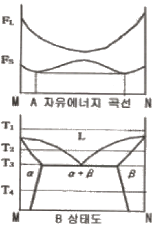
- T1
- T2
- T3
- T4
(정답률: 51%)
24. 확산을 관여하는 원자의 종류 또는 이동하는 원자의 확산경로에 따라 분류할 때 이동하는 원자의 확산경로에 따른 분류에 해당되는 것은?
- 자기확산
- 상호확산
- 입계확산
- 반응확산
(정답률: 62%)
25. 결합력에 의한 결정을 분류하고자 할 때 원자의 결합양식이 아닌 것은?
- 이온 결합
- 톰슨 결합
- 공유결합
- 반데르발스 결합
(정답률: 76%)
26. 수축공 및 기공과 같은 주조결함은 어떤 형태의 결함인가?
- 점결함
- 선결함
- 면결함
- 체적결함
(정답률: 65%)
27. 재료의 강도를 높여주는 처리라 볼 수 없는 것은?
- 열간가공
- 냉간가공
- 합금원소의 첨가
- 결정립의 미세화
(정답률: 67%)
28. 금속의 강도를 증가시키는 방법은 전위(dislocation)이동을 방해하는 방법과 관계가 있다. 전위의 이동을 방해하는 것과 관련이 가장 적은 것은?
- 석출물
- 결정립계
- 이동이 중지된 전위
- 프랭크 리드(Frank-Read) 원
(정답률: 63%)
29. 탄소강에서 마텐자이트 변태의 특징을 설명한 것 중 틀린 것은?
- 많은 격자 결함이 존재한다.
- 결정구조의 변화가 있고 성분의 변화는 없다.
- 확산 변태로서 원자의 이동속도가 매우 빠르다.
- 모상과 일정한 결정학적인 방위관계를 가지고 있다.
(정답률: 73%)
30. 그림에서 화살표 방향의 방향지수는?
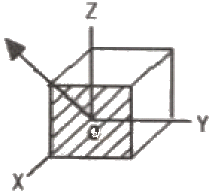
- [110]
- [101]
- [011]
- [010]
(정답률: 57%)
31. 시효경화 합금으로 가장 대표적인 것은?
- Al-Cu합금
- Al-Fe합금
- Al-Pb합금
- Al-Mo합금
(정답률: 76%)
32. X-ray 회절시험에서 (hkℓ)면의 면간거리 d를 구하는 식으로 옳은 것은? (단, a는 격자상수이다.)
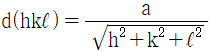
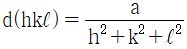
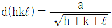
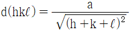
(정답률: 66%)
33. 냉간가공으로 금속이 받는 성질의 변화는 풀림처리에 의하여 가공 전의 상태로 돌아가려는 경향을 가지나 결정립의 모양이나 결정의 방향에 변화를 일으키지 않고 물리적, 기계적 성질만 변화하는 과정은?
- 연화
- 회복
- 재결정
- 결정립 성장
(정답률: 73%)
34. 주방조직(as-cast structure)으로 1차 조직에 해당하는 것은?
- 수지상 조직
- 마텐자이트 조직
- 베이나이트 조직
- 펄라이트 조직
(정답률: 71%)
35. 고온에서 불규칙 상태의 고용체를 천천히 냉각시킬 때 규칙적인 배열로 변화가 시작되는 온도는?
- 응고온도
- 용체화온도
- 전이온도
- 재결정온도
(정답률: 70%)
36. 고용체에서 용질원자와 칼날전위의 상호작용에 대한 효과는?
- 홀 효과
- 1방향 효과
- 프렌켈 효과
- 코트렐 효과
(정답률: 66%)
37. 0.2% 탄소를 함유한 강의 723℃ 선상에서 α(ferrite)의 양은 약 몇 % 인가? (단, α의 최대 탄소고용한도는 0.025%이며, 공석점의 최대 탄소 고용한도는 0.8%이다.)
- 22.6%
- 30.6%
- 69.4%
- 77.4%
(정답률: 43%)
38. 규칙-불규칙 변태의 측정에 관한 설명 중 틀린 것은?
- 규칙화 온도는 비열측정으로 알 수 있다.
- 전기저항 측정으로는 규칙격자의 조성을 알 수 없다.
- 규칙화에 의해 결정에너지 변화가 발생하고, 이것이 이상 비열 변화로 나타난다.
- 장범위 규칙격자에 대하여 X선 화절을 하면 불규칙 합금에 나타나는 회절선외에 규칙격자선 이라고 하는 다른 회전선이 나타난다.
(정답률: 56%)
39. 금속의 확산기구를 설명 할 수 있는 가장 기본적인 개념은?
- 가전자의 공유
- 결정내 원자의 진동
- 자유전자의 존재
- 결정 내 원자의 이온화
(정답률: 54%)
40. 펄라이트변태를 설명한 것 중 틀린 것은?
- Fe3C를 핵으로 발생 성장한다.
- 결정립의 크기가 크면 펄라이트 변태가 촉진된다.
- 합금 원소에 따라 펄라이트 변태 온도는 증가 또는 감소한다.
- 변태초기에는 반드시 Fe3C가 나타나나 후기에는 조성에 따라 특수 탄화물 등으로 변화한다.
(정답률: 48%)
3과목: 금속열처리
41. 냉간가공에 의한 스프링 성형 후 내부응력을 감소시키고 탄성을 높일 목적으로 행하는 저온 가열 열처리로서 표면을 가열온도에 따라 황색 또는 청색으로 나타내는 열처리 방법은?
- Maraging
- Patenting
- Blueing
- Slack quenching
(정답률: 73%)
42. 감의 담금질 냉각곡선의 냉각 단계에서 [보기]의 냉각속도가 가장 빠른 단계에서 느린 단계 순으로 옳은 것은?
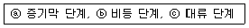
- ⓐ＞ⓑ＞ⓒ
- ⓑ＞ⓒ＞ⓐ
- ⓒ＞ⓐ＞ⓑ
- ⓑ＞ⓐ＞ⓒ
(정답률: 57%)
43. 열처리의 냉각방법 3가지 형태에 해당되지 않는 것은?
- 급냉각
- 연속냉각
- 2단냉각
- 항온냉각
(정답률: 69%)
44. 퀜칭 후 국부적인 경도 부족이 아니고, 전반적인 경도 부족 즉, 퀜칭이 되지 않는 경우의 원인에 대한 설명으로 틀린 것은?
- 오스테나이트화 온도가 너무 낮을 경우
- 퀜칭 시 냉각 개시온도가 너무 낮아진 경우
- 잔류 오스테나이트가 다량 잔류했을 경우
- 냉각시 냉각속도가 임계냉각 속도보다 빠를 경우
(정답률: 66%)
45. 알루미늄 질별 기호 중 “H”가 의미하는 것은?
- 주조한 그대로의 것
- 가공경화 한 것
- 풀림 한 것으로 가공재만 사용
- 용체화 후 자연 시효 경화가 진행 중인 상태
(정답률: 68%)
46. 침탄용강의 구비 조건 및 합금 성분에 대한 설명으로 틀린 것은?
- 저탄소강이어야 한다.
- 표면에 결점이 없어야 한다.
- 장시간 가열시 결정립성장이 없어야 한다.
- V, W, Si 등을 첨가하면 침탄량을 증가시킬 수 있다.
(정답률: 65%)
47. 다음 열처리의 종류와 목적이 틀리게 짝지어진 것은?
- 담금질-급랭시켜 재질을 경화시킨다.
- 풀림-공냉하여 재질의 표면을 경화시킨다.
- 뜨임-담금질 된 재료에 인성을 부여 한다.
- 불림-소재를 일정온도에 가열 후 공냉하여 조직을 표준화시킨다.
(정답률: 64%)
48. 그림과 같이 자동차용 볼트, 너트 등을 대향 열처리하기 위해서 도입해야 할 설비는?
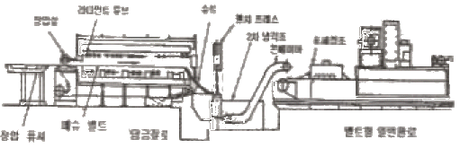
- 배치로
- 연속로
- 횡형로
- 원통로
(정답률: 75%)
49. 마퀜칭(marquenching) 과정 및 결과에 관한 설명으로 틀린 것은?
- Ms점 직상으로 가열된 염욕에 담금질한다.
- 마퀜칭 후 얻어지는 조직은 베이나이트이다.
- 퀜칭한 재료의 내외부가 같은 온도가 될 때까지 항온 유지한다.
- 시편각부의 온도차가 생기지 않도록 비교적 서랭하여 Ar" 변태를 진행시킨다.
(정답률: 58%)
50. 마레이징강에 대한 설명으로 틀린 것은?
- 탄소는 1.5% 이상을 함유하고 있다.
- 강화에 의한 마텐자이트는 비교적 연성이 크다.
- 시효 처리로 금속간화합물의 석출에 의해 경화된다.
- 50% 냉간가공 후 용체화처리하면 강도가 더욱 높아 진다.
(정답률: 44%)
51. 경화능을 향상시킬 수 있는 방법으로 가장 적당한 것은?
- 질량 효과를 크게 한다.
- 담금질성을 증가시키는 Co, V 등을 첨가한다.
- 오스테나이트의 결정입자를 크게 한다.
- 직경이 작은 제품보다 큰 제품을 열처리 한다.
(정답률: 43%)
52. 전해 담금질을 위한 전해액의 구비조건으로 틀린 것은?
- 비전도도가 커야한다.
- 전극을 침식시키지 말아야 한다.
- 취급이 쉽고 독성이 없어야 한다.
- 음극의 주위에 수소가 저전압으로 발생하지 않아야 한다.
(정답률: 44%)
53. 강의 열처리 조직 중 경도가 가장 높은 것은?
- 펄라이트
- 페라이트
- 마텐자이트
- 오스테나이트
(정답률: 77%)
54. 0.86%C 탄소강을 A1점 이상의 오스테아니트 상태에서 580℃의 용융 연욕 중에 담금하면 1초 이내에 어떤 조직으로 변태하기 시작 하는가?
- 페라이트
- 마텐자이트
- 미세 펄라이트
- 레데뷰라이트
(정답률: 63%)
55. 그림은 구상화 어닐링의 한 가지 방법이다. A1변태점을 경계로 가열냉각을 반복하여 얻을 수 있는 효과는 무엇인가?
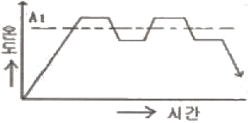
- 망상 Fe3C를 없앤다.
- Fe3의 망상을 크게 한다.
- 펄라이트의 생상 및 편상화 한다.
- 페라이트와 시멘타이를 층상화 한다.
(정답률: 77%)
56. 베릴륨 청동을 용체화처리 한 후 시효처리의 목적으로 가장 적당한 것은?
- 경화
- 연화
- 취성부여
- 내부응력 제거
(정답률: 61%)
57. 수증기를 이용하여 산화피막(Fe3O4)를 형성하는 방법으로 절삭 내구력이 현저히 향상되고, 장시간 사용되는 공구드릴, 탭 등에 사용되는 표면처리는?
- 침유처리
- 조질처리
- 용사처리
- 호모(homo)처리
(정답률: 70%)
58. 열처리로의 온도를 추정하는 것 중 가장 높은 온도를 측정하는 열전대는?
- 크로엘-알루엘 연전대
- 백금-백금ㆍ로듐 열전대
- 구리-콘스탄탄 열전대
- 철-콘스탄탄 열전대
(정답률: 75%)
59. 강재의 가열시 탈탄 부분의 결함 검출방법으로 맞지 않는 것은?
- 죠미니 시험
- 파단면 검사
- 불꽃 시험법
- 현미경 조직검사
(정답률: 63%)
60. 심냉 처리(sub-zero treatment)시 발생하기 쉬운 미세균열의 방지대책으로 가장 적당한 것은?
- 물속에 투입 하는 급속 해동법을 피한다.
- 처리 온도에서 승온 할 때는 공기 해동을 시킨다.
- 처리전에 100℃ 정도에서 가벼운 뜨임을 한다.
- 가급적 대형 부품이나 두께가 두꺼운 부품만을 처리한다.
(정답률: 72%)
4과목: 재료시험
61. 크리프시험에 대한 설명으로 틀린 것은?
- 어떤 재료에 크리프가 생기는 요인은 온도, 하중 시간이다.
- 1단계 크리프는 감속 크리프라 하며 변형률이 감소되는 단계이다.
- 크리프 한도란 어떤 시간 후에 크리프가 정지하는 최대 응력이다.
- 철강 및 경합금 등은 250℃ 이하의 온도에서 크리프 현상이 일어난다.
(정답률: 62%)
62. 다음 중 그라인딩 불꽃시험을 할 때 안전 사항으로 틀린 것은?
- 그라인더 커버가 없는 것은 사용을 금한다.
- 그라인더 작업시 반드시 보안경을 착용한다.
- 연마할 때 너무 강하게 누르지 말고 가볍게 접촉시킨다.
- 숫돌의 바퀴는 정확하게 끼워야 하며 구멍이 작으면 해머로 때려 박는다.
(정답률: 75%)
63. 시험기에 장착된 금속 박판을 컵 모양이 될 때까지 구형펀치로 눌러서 금속 판박의 소성 변형 능력을 평가하는 시험 방법은?
- 에릭슨 시험
- 굽힘 시험
- 전단 시험
- 인장 시험
(정답률: 64%)
64. 금속조직시험에서 조직량 측정법이 아닌 것은?
- 점의 측정법
- 직선의 측정법
- 체적의 측정법
- 면적의 측정법
(정답률: 59%)
65. 피로시험에 대한 설명 중 옳은 것은?
- 반복획수와 응력과의 관계를 P-P곡선이라 한다.
- 피로한도비는 인장강도를 피로한도로 나눈 값이다.
- 시편형상, 표면다듬질정도, 가공방법 등은 피로 시험결과에 영향을 주지 않는다.
- 피로균열은 점진적이며 그 파면은 조개껍질 모양이나 나이테 모양인 것이 특징이다.
(정답률: 63%)
66. 시험편의 연마에 대한 설명으로 틀린 것은?
- 초경금속합금에 사용되는 연마제는 다이아몬드 페스트를 사용한다.
- 전해연마는 경한 재질이나 연마속도가 빠른 재료에 사용된다.
- 스크래치한 두 물체를 마찰 했을 때보다 무른 쪽에 생기는 긁힌 자국이다.
- 전해연마는 연마하여야 할 금속을 양극으로 하고, 불용성 금속을 음극으로 하여 전해액 안에서 하는 작업이다.
(정답률: 50%)
67. 쇼어 경도 시험기의 종류에 해당하지 않는 것은?
- B형
- C형
- D형
- SS형
(정답률: 62%)
68. 누설탐상시험에 대한 설명 중 틀린 것은?
- 시험방법으로는 버블법, 스니퍼법 및 후드법이 있다.
- 누설탐상시험은 압력용기 및 각종 부품의 내면편석을 검사한다.
- 설비 및 장치로는 압력게이지가 부착된 압력용기를 사용한다.
- 압력게이지를 사용할 때 눈금은 측정하고자 하는 최대 압력의 2배가 넘어야 한다.
(정답률: 44%)
69. 로크웰 경도 시험에 대한 설명으로 틀린 것은?
- 다이아몬드압입자의 원추 선단 각도는 136°이다.
- 다이아몬드 원추 또는 강구를 시편에 압입하고 이때 생기는 압입된 깊이에 의해 경도를 측정한다.
- 시험편의 시험면과 뒷면은 서로 평행된 평면이어야하며, 깊이는 압입 두께차 h의 10배 이상이어야 한다.
- 시험편에 가하는 기준 하중은 10kgf이며, 시험 하중은 60kgf, 100kgf, 150kgf 이 있다
(정답률: 62%)
70. 압축 시 금속재료의 파괴를 설명할 수 있는 법칙은? (단, 응력 값이 넓은 범위에서 성립되어야 한다.)
- 지수 법칙
- 훅의 법칙
- 상사의 법칙
- 에너지 보존 법칙
(정답률: 40%)
71. 전기가 대기 중에서 스파크(Spaek)방전될 때 가장 많이 생성되는 가스는?
- CO2
- H2
- O2
- O3
(정답률: 65%)
72. 초당 1개의 붕괴가 일어나는 방사능의 강도를 나타내는 단위는?
- Sv
- Bq
- eV
- mA
(정답률: 64%)
73. 충격 시험에 대한 설명 중 틀린 것은?
- 샤르피식 충격시험기가 있다.
- 충격시험을 통해 재료의 인성 또는 취성을 알 수 있다.
- 충격 하중에 대한 저항력을 측정한 시험으로 정적 시험이다.
- 충격값은 흡수에너지를 노치부 단면적으로 나눈 값으로 표시한다.
(정답률: 64%)
74. 피로시험에서 재료를 완전한 탄성제로 생각할 때 노치부분에 생긴 최대응력을 σmax라 하고 노치가 없을 때의 응력을 σn 이하 했을 때 형상계수(응력집중계수) α는?
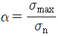
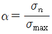
- α=σmax×σn
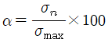
(정답률: 58%)
75. 굽힘 시험(bending test)에 대한 설명으로 틀린 것은?
- 굽힘에 대한 저항력과 전성, 연성, 균열유무를 알 수 있다.
- 파단계수는 단면계수와 최대 굽힘 모멘트의 비로 최대 응력을 나타낸다.
- 굽힘 시험시 외측에서의 응력이 항복점보다 높을 때 소성변형이 일어난다.
- 힘이 가해지는 방향으로는 인장응력이 반대쪽에서는 압축응력이 발생된다.
(정답률: 64%)
76. 다음 중 비틀림 시험에서 측정할 수 없는 것은?
- 강성계수
- 비틀림 강도
- 단면 수축률
- 비틀림 파단계수
(정답률: 65%)
77. 초음파탐상검사의 특징을 설명한 것 중 틀린 것은?
- 검사자 또는 주변 사람에 대한 장애가 없다.
- 표준 시험편 또는 대비 시험편이 필요하지 않다.
- 초음파 전달 효율을 높이기 위하여 접촉매질이 필요하다.
- 내부 결함의 위치, 크기 방향을 정확히 측정 할 수 있다.
(정답률: 65%)
78. 침투탐상시험에서 액체 침투제가 균열, 갈라진 틈 또는 조그만 구멍으로 침투하는 양 또는 비율에 영향을 미치는 것은?
- 침투제의 색깔
- 검사할 시편의 경도
- 검사할 시편의 전도도
- 검사할 시험편의 표면상태
(정답률: 75%)
79. 두께 5mm, 폭이 25mm, 표점거리 50mm인 인장 시험편을 최대하중 6460kgf에서 인장 시험한 결과 두께 4.2mm, 폭이 20mm, 표점거리 60mm 이었다면 인장강도는?
- 41.7 kgf/mm2
- 51.7 kgf/mm2
- 61.7 kgf/mm2
- 71.7 kgf/mm2
(정답률: 48%)
80. 철강 중에 FeS 또는 MnS는 개재물로 존재하는데 S을 검출하기 위해 사용되는 검사법은?
- 열분석법
- 형광 검사법
- 설퍼 프린트법
- 음향 방출법
(정답률: 81%)